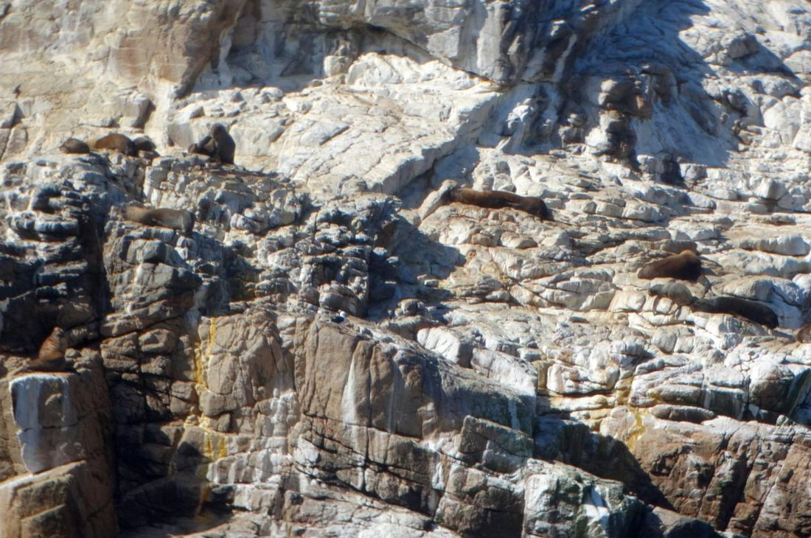

← → Navegar · Esc Cerrar
ESPECIES PRESENTES EN LA CONCESIÓN MARÍTIMA Y EN EL ISLOTE PÁJAROS NIÑOS.
Registro fotográfico de biodiversidad, diciembre 2024 – noviembre 2025, en cumplimiento del Decreto Supremo N° 281/2021.
CONOCE EL REGISTRO ↓El monitoreo se realiza mediante recorridos por el área de la Cofradía, incluyendo la concesión marítima y el perímetro marino que rodea al Islote Pájaros Niños. Se registran aves, mamíferos marinos y recursos bentónicos.
La identificación de las especies cuenta con el apoyo de profesionales de la Pontificia Universidad Católica de Chile, a través de la Estación Costera de Investigaciones Marinas – Las Cruces (ECIM), con la que la Cofradía mantiene un convenio de mutuo apoyo.
El área marina se divide en 15 sectores para el registro fotográfico del perímetro del islote. Las campañas priorizan las primeras horas de la mañana y el atardecer, y el recorrido se hace en embarcaciones de la Cofradía o de sus socios.
En la marina, los sectores de observación se identifican con letras y combinan fotografías y videos de fauna y flora asociadas a muelles, molos y fondos.
Base: 816 fotografías rotuladas de los sectores 1 a 15 y las observaciones de la marina. Los nombres siguen los rótulos del informe.
Una fotografía por especie, tomada en los sectores 1 a 15. Toca una imagen para ampliarla.
El informe también rotula huala (Podiceps major), pelícano de Humboldt y jote sin especificar, pero no incluye una fotografía individual que permita identificarlos con claridad.
Imágenes del monitoreo en los sectores de la marina, con las especies identificadas en cada una.

Se observan ejemplares de Otaria flavescens de forma recurrente en el entorno de la marina, usando los muelles y los sectores rocosos del islote como puntos de descanso transitorio.
El área no es un sitio de reproducción ni de crianza: la principal zona de descanso está en un santuario cercano, Peña Blanca.